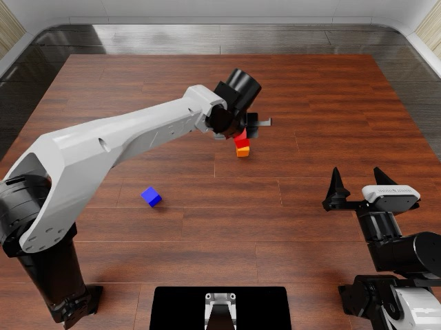
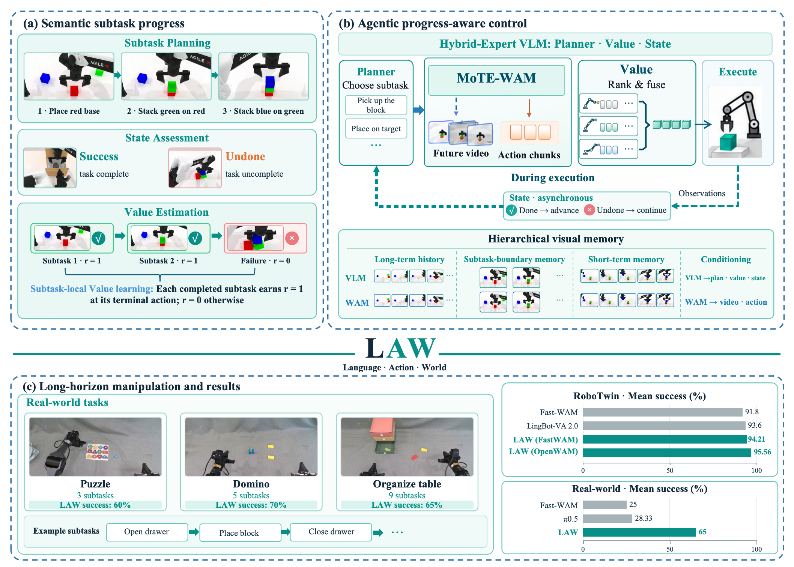
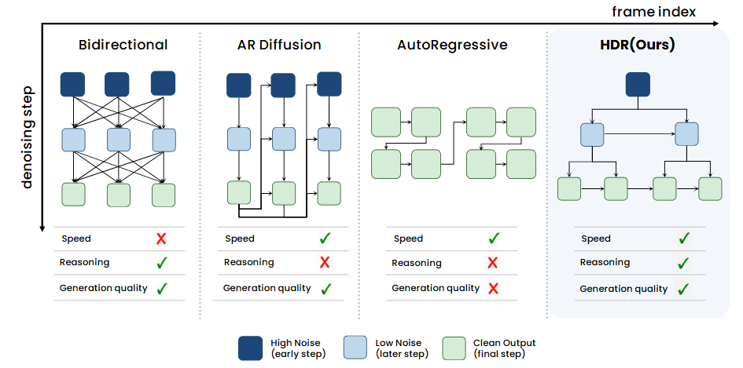
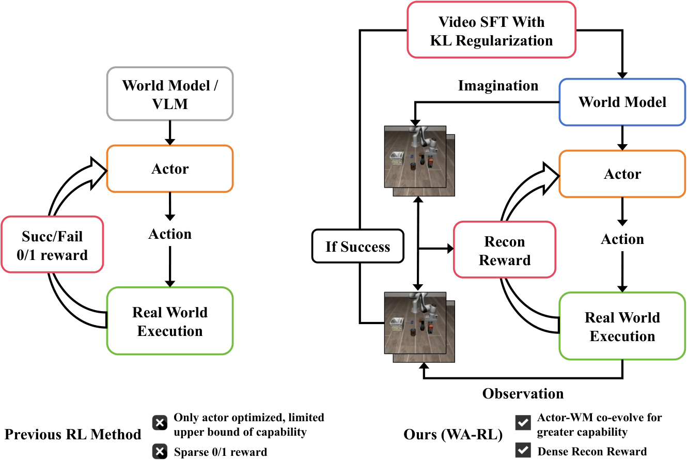
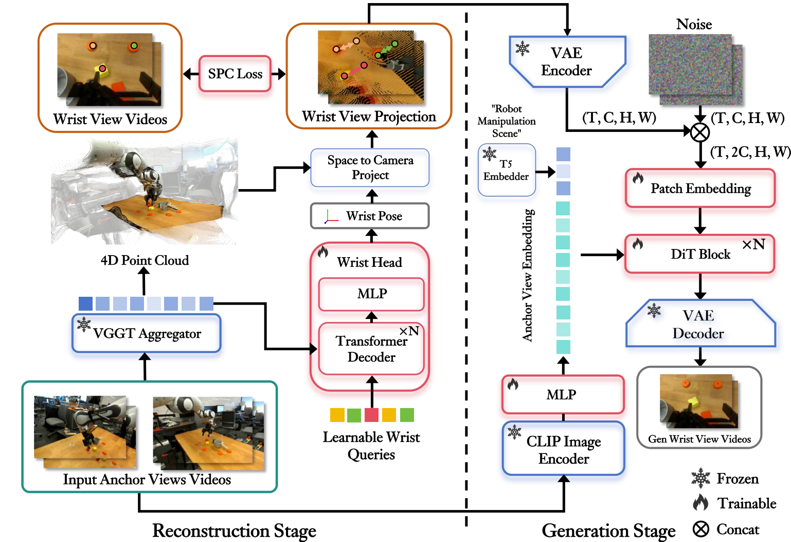
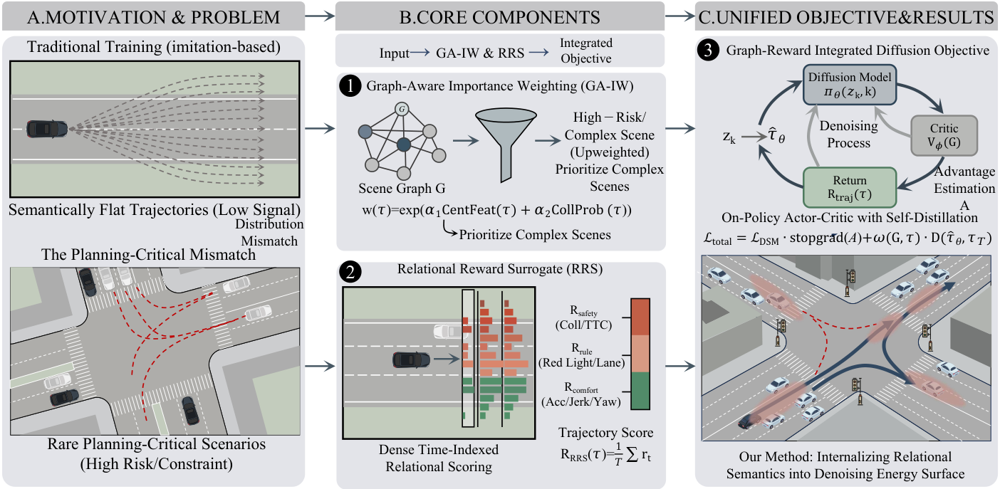
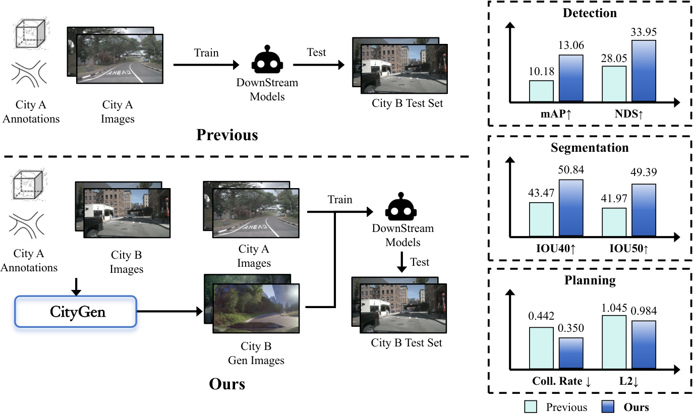
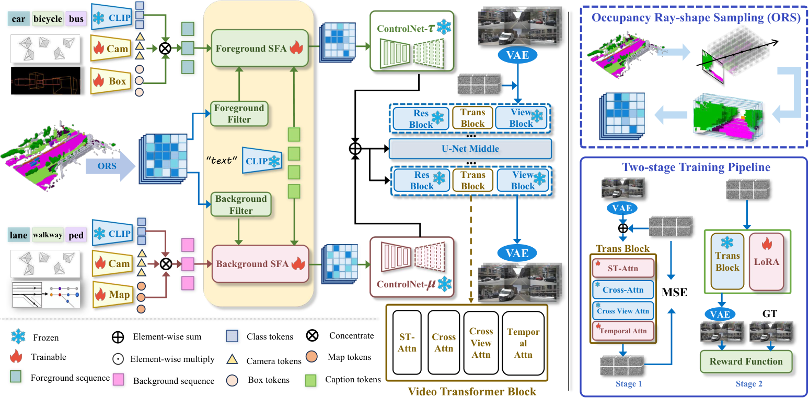

2026Embodied Agent for Physical RSI
Investigating embodied agent harnesses, expressive communication between reasoning agents and VLA/world-action models, and asynchronous reasoning–execution loops for physical interaction.
Incoming PhD Student
Peking University
Starting in 2027
I am an incoming PhD student at Peking University, starting in 2027 under the supervision of Prof. Shanghang Zhang. My research spans world models, embodied intelligence, and reinforcement learning, with a focus on building agents that can reason about the world and act within it.
World Models · Physical Agents · Vision–Language–Action · Reinforcement Learning
First / co-first author papers and ongoing projects.

2026Investigating embodied agent harnesses, expressive communication between reasoning agents and VLA/world-action models, and asynchronous reasoning–execution loops for physical interaction.

2026An asynchronous embodied-agent framework that unifies semantic planning, action generation, and world modeling. A Mixture-of-Transformer Experts architecture supports joint video–action modeling and closed-loop, long-horizon control.
95.56% success across 50 RoboTwin tasks with OpenWAM-α; 65% success on real-robot long-horizon tasks.

2026RSS Workshop Best Paper
A hierarchical denoising framework that organizes video latents into a tree and uses sparse hierarchical attention for coarse-to-fine reasoning, balancing inference efficiency with global consistency.

2026Jointly optimizing the actor and world model with reconstruction rewards and online video supervised fine-tuning, improving failure recovery and long-horizon manipulation on LIBERO and RLBench.

2025A geometry-constrained wrist-view world model with cross-view latent alignment, designed to improve temporal and cross-view consistency for first-person robotic manipulation.

2025Reinforcement learning for diffusion-based driving planners, combining relational rewards, advantage-weighted updates, and on-policy distillation to improve planning in challenging safety scenarios.

2025Decoupling scene geometry from city style in generative driving simulation to improve cross-city generalization and reduce structural artifacts.

2024Introducing policy feedback into generative rollouts through reward-guided diffusion and closed-loop training to address error accumulation and trajectory drift.
Building large-scale pretraining and data infrastructure for OpenWAM with Megatron. Core model contributor to early real-robot demonstrations, spanning data collection, training, DAgger, and reinforcement learning.
Developed PPO-based humanoid control from human motion capture through simulation training to real-robot deployment. Integrated perception for table-tennis play and conducted experiments on Unitree G1, H2, and AgiBot A3. The team won first place in table tennis at the World Humanoid Robot Games.
Converted bidirectional world models into causal architectures and applied distribution matching distillation for 10× faster inference. Explored long-context memory training with rolling KV caches for minute-scale video.
Trained Wan2.2 5B world models on a 100-GPU-scale cluster. Led WristWorld and its viewpoint-transfer module, and contributed to the technical report WoW: Towards a World-Omniscient World Model.
Explored in-context learning for VLA models, reproduced and deployed reinforcement learning based on π0.5, and optimized world-action models for deployment.
Studied generative world models for autonomous driving and co-developed a diffusion-based driving simulation engine.
Incoming PhD Student · Five-year doctoral program
Advisor: Prof. Shanghang Zhang
Bachelor's studies in Artificial Intelligence · Rank: 1 / 66
Young Gifted Students Program, preparatory studies (2022–2023). Entered undergraduate study at age 16 after an additional year of academic acceleration.
My long-term vision is to distill humanity's knowledge across all modalities into AGI.